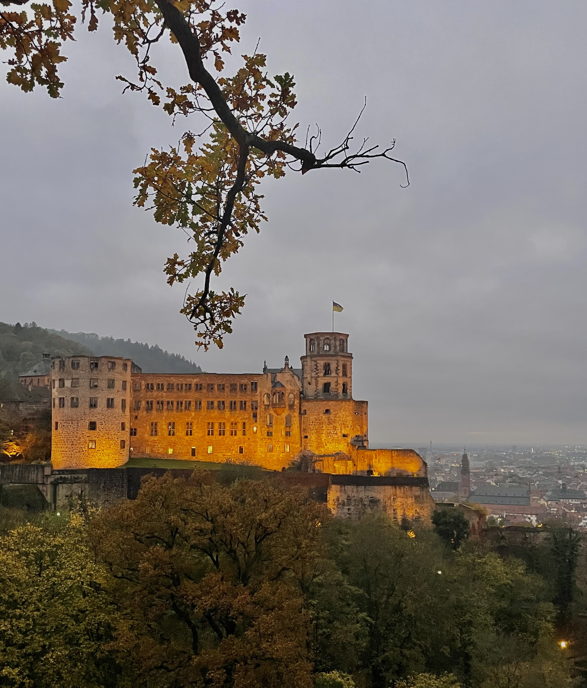
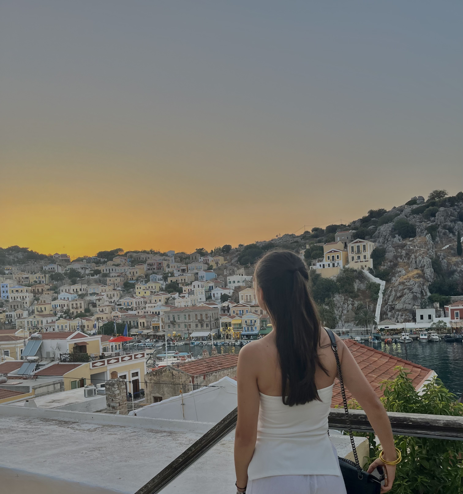
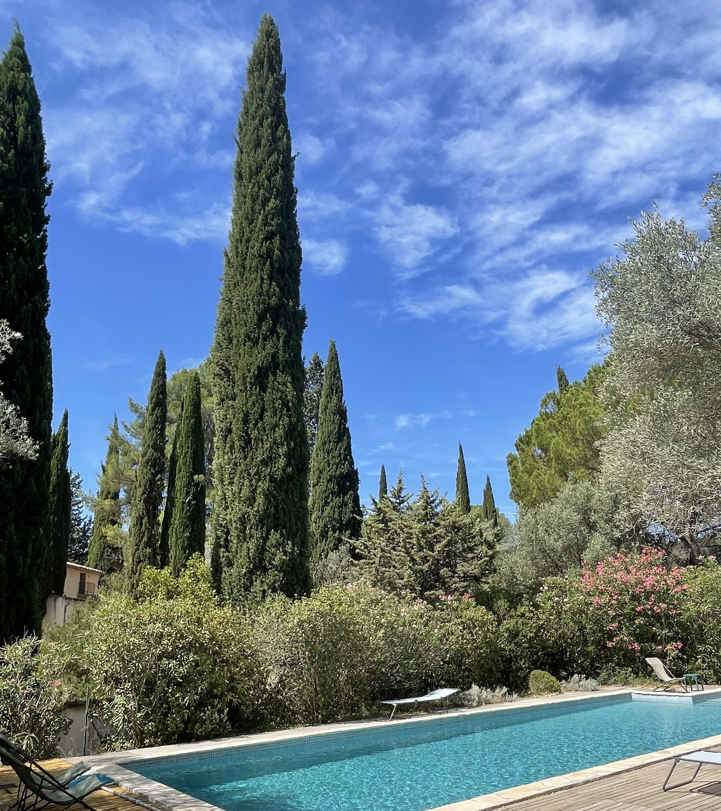
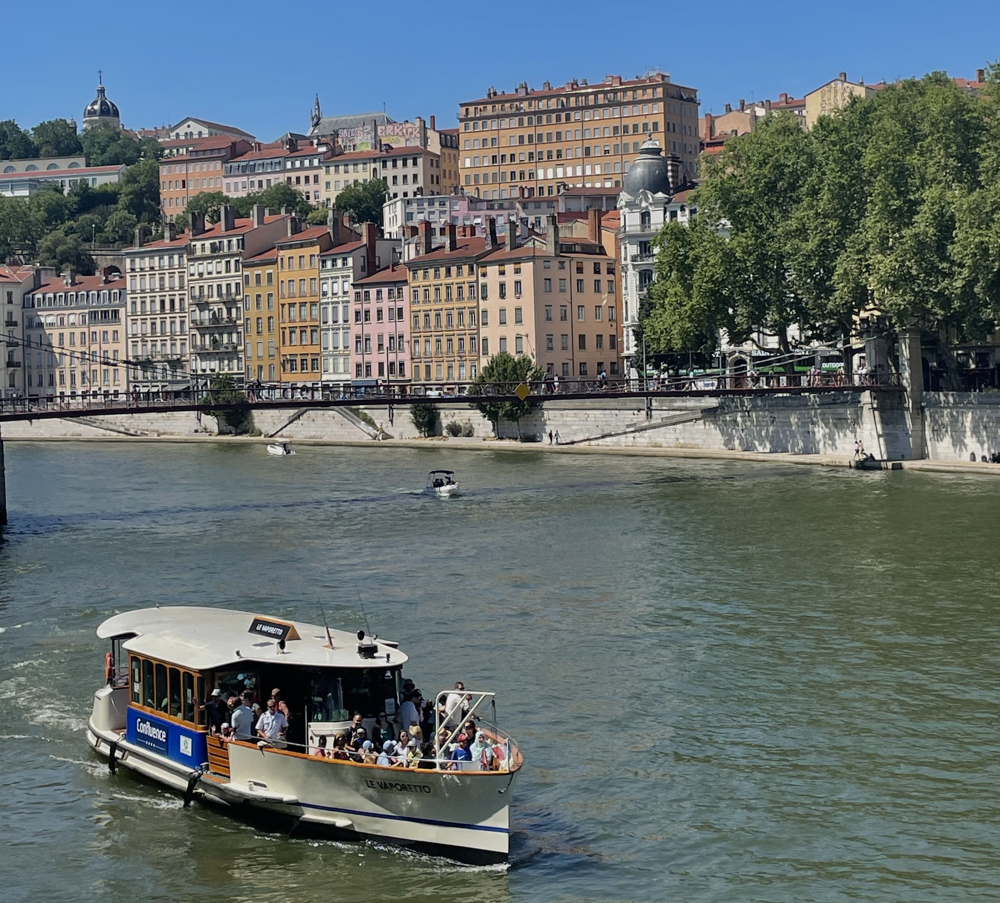

Hello, I'm Candice :)
I love traveling and meeting new people. I'm interested in theater and cooking.
Discover Le WagonTravels
Here are some trips I've taken that I warmly recommend to you:
A Fall Journey
Heidelberg, Germany
A Delightful Break
The Dodecanese, a Greek archipelago off the Turkish coast
A Sunny Break

Marrakesh, Morocco
A Provençal Stay
Le Beausset, La Cadière d’Azur, and Le Castellet
A Snow-Covered and Sporty Week
Zermatt, Switzerland
A Gastronomic Stopover
Lyon, France
Cooking
Here are some of my favourite recipes.
- Salmon Tataki with Polenta and Runner Beans
- A Fresh Spinach Roll with Salmon, Dill and Fromage frais
- The Classic Tomato & Mustard Tart
- Carrot Tarte Tatin
- Zucchini and Kiri Velouté
Theater
Here are some plays I suggest.
Edmond
Alexis Michalik
Dernier Coup de Ciseau
Paul Pörtner
La Dame Blanche
Michèle Garcia
Rhinocéros
Eugène Ionesco
Zoo ou l’Assassin Philanthrope
Vercros